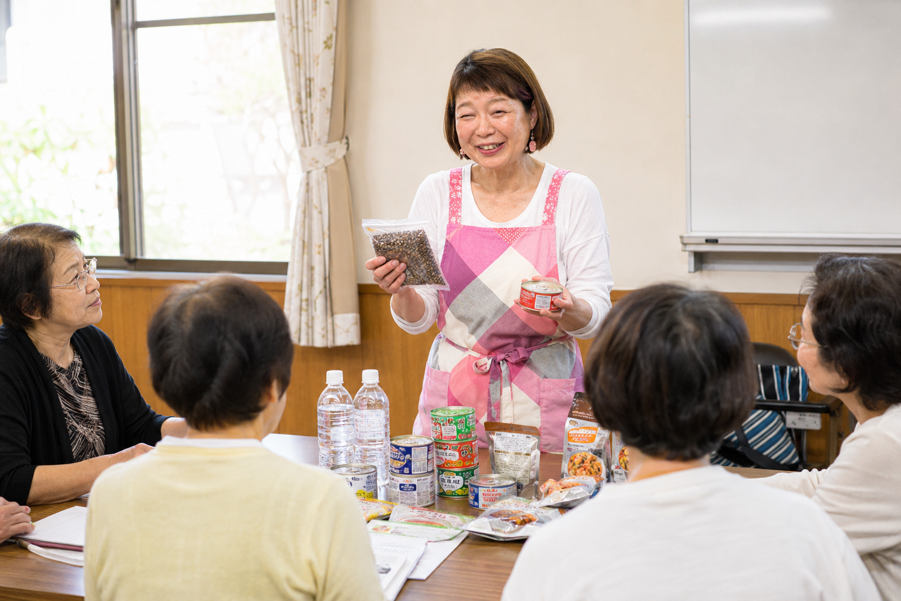
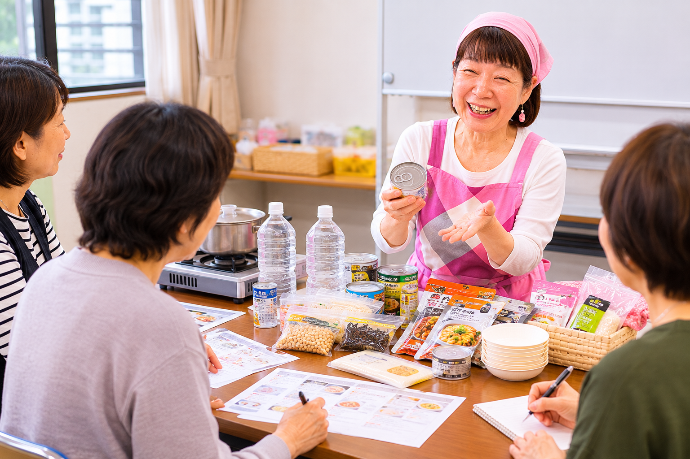
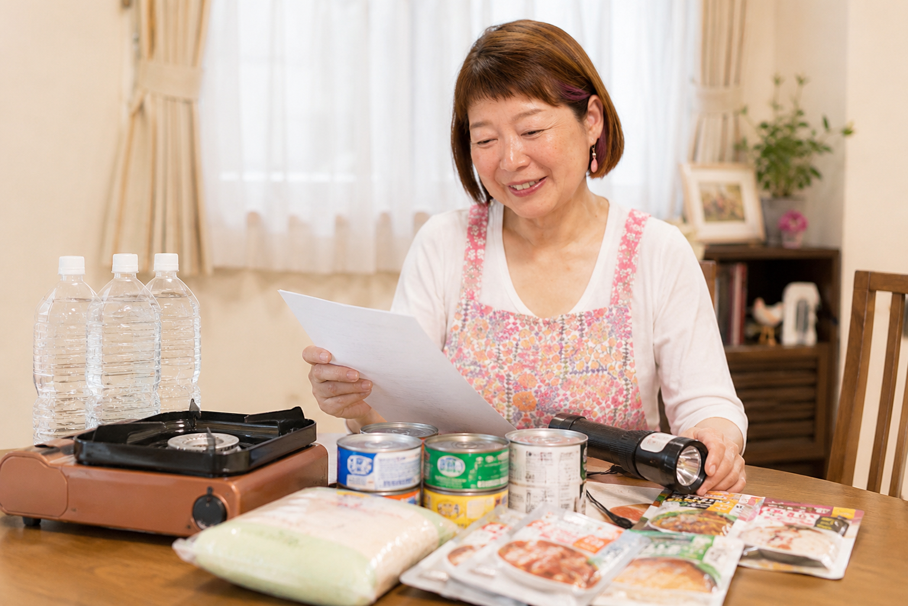
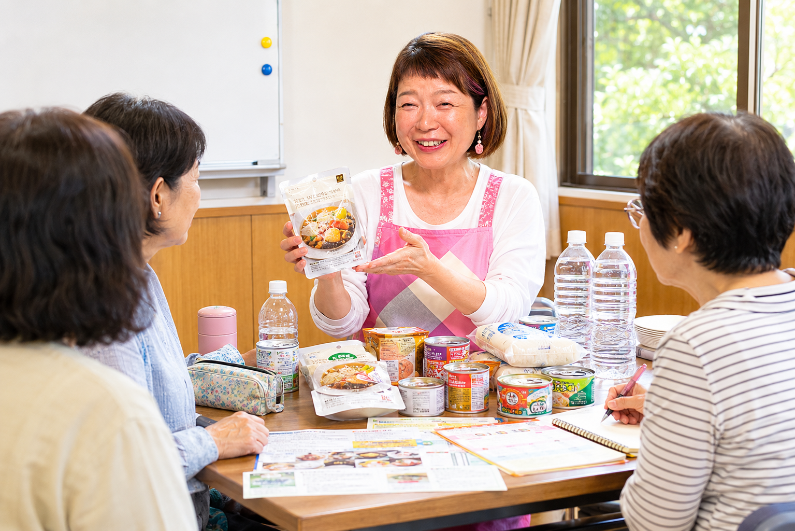
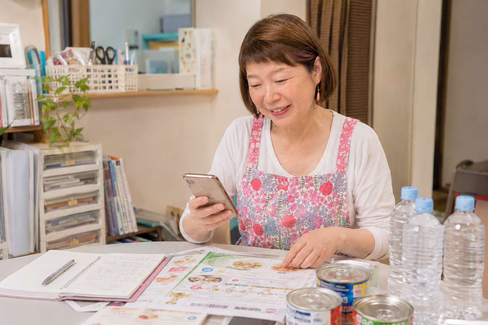

防災を「食」から入ることで、高齢者、子育て世帯、働く世代にも関心を持ってもらいやすくなります。
島根県松江市から、地域の食卓に備えを届けます
いつもの食事が、
いざという時の備えになります。
防災を難しく考えすぎず、毎日の買い物と食事の中で続けられる形に。西本敦子が、家庭備蓄とローリングストックをやさしく、実践しやすくお伝えします。
公民館、自治会、社会福祉協議会、地域団体、学校・PTA、高齢者サロン、企業研修など、対象者や会場に合わせて講座内容を調整します。
- 公民館講座
- 自治会研修
- 社協の地域講座
- 親子向け
- 学校・PTA
- 高齢者サロン
- 企業研修

企画担当者の方へ
防災講座を、参加しやすく、家庭で続けやすい内容にします。
備蓄の必要性は分かっていても、家庭で無理なく続けるところまで伝えるのは簡単ではありません。食の専門家として、日常の食卓に近い言葉と実例でお話しします。

特別な非常食だけではなく、普段買う食品を使いながら備える方法を具体的に伝えます。
料理教室・セミナーで延べ4,000名以上を指導。対象者に合わせて、丁寧に進行します。
講座メニュー
会場、人数、対象者に合わせて、3つの形でご提案します。
防災食育講座
公民館、自治会、社協、高齢者サロンの地域講座に向いています。災害時の食の困りごと、家庭備蓄、ローリングストックの基本を、生活に近い言葉で学びます。
- 60分から対応
- 高齢者サロンにも対応
- 備蓄チェックの導入に適しています
親子・高齢者向けワークショップ
家庭にある食材や身近な食品を題材に、災害時に役立つ食の備えを体験します。参加者同士の会話が生まれやすい内容です。
- 少人数講座に対応
- 親子イベントに対応
- 要配慮者の食の備えも扱えます
企業・事業所の防災研修
従業員の安全、職場備蓄、災害時の健康管理を食の面から考える研修です。BCPや安全衛生の入口としても使いやすい内容です。
- 事業所研修に対応
- 備蓄品の見直しに活用
- 短時間の講話も可能です

講座で学べること
備えを「買って終わり」にしないために。
防災食は、しまい込んで忘れてしまうものではなく、日々の食卓の延長に置くことで続きます。講座では、家庭ですぐに見直せる実践項目を扱います。

- 家庭にある食材でできる防災食
- ローリングストックの始め方
- 災害時に困らない食と暮らしの備え
- 高齢者・子育て世帯の備蓄チェック
- 地域で助け合うための食のミニワーク
さまざまな災害・避難シーンに備える
避難所に行く時も、家で過ごす時も、食の備えは変わります。
地震、火災、山火事、津波、停電、大雨など、災害の種類によって必要な備えや困りごとは異なります。講座では、地域や家庭の状況に合わせて「どんな時に、何を、どのくらい備えるか」を一緒に考えます。
水、火を使わない食事、温めなくても食べられる食品、停電時の調理の工夫を確認します。
すぐに持ち出すもの、避難先で食べやすいもの、家族構成に合わせた非常持ち出し食を考えます。
買い物に行けない期間を想定し、普段の食品を使いながら無理なく回す備蓄を整えます。
ペットがいるご家庭へ
人の備えと一緒に、ペットの食と安心も考えます。
ペットを飼っている家庭では、避難先、フード、水、薬、トイレ用品など、人とは別の備えが必要です。西本敦子は現在、ペットの備えに関する書籍も計画中です。
- ペットフード・水の備蓄量
- 避難時に持ち出すものの整理
- 家族とペットが在宅避難する時の備え
- 地域講座で扱いやすいペット防災の話題

講師プロフィール
西本 敦子
キャリア30年のフードコーディネーターです。料理教室やセミナーを通じて、これまで延べ4,000名以上の方に食の楽しさと実践方法をお伝えしてきました。
防災食については、「特別な非常食ではなく、普段の食事こそが最高の備蓄である」という考えを大切にしています。買い置きした食品を使い、また買い足す。その自然な流れの中に、家族と地域を守る備えがあります。
島根県ブランド推進課アドバイザーとして、市町村の特産品を使った商品開発にも携わってきました。地域の食材や暮らしに寄り添いながら、無理なく続く防災食育をお届けします。
キャリア30年
延べ4,000名以上を指導
著書あり
島根県ブランド推進課アドバイザー
- 防災共育管理士
- 備蓄防災食調理アドバイザー
- FCAJ認定フードコーディネーター
- SDGsライフアドバイザー
よくある質問
開催前に気になることを、事前に確認できます。
少人数でも依頼できますか？
可能です。公民館講座、地域サロン、親子向けの小さな集まりなど、人数に合わせて内容を調整します。
講演だけでなく、体験型の講座もできますか？
可能です。会場設備や時間に合わせて、講演、体験型ワークショップ、少人数講座を組み立てます。
どの地域まで対応できますか？
松江市内・島根県内を中心に対応します。その他の地域も、日程や内容によりご相談ください。
料金はどのように決まりますか？
内容、時間、人数、移動距離により調整します。まずは開催の概要をお知らせください。
まだ企画が固まっていなくても相談できますか？
はい。対象者、会場、希望時期が分かる範囲で大丈夫です。講座の形から一緒に整理できます。
お問い合わせ
講座内容・時間・人数に合わせて調整できます。
まずは公式LINE、電話、メールでご相談ください。開催予定地域、対象者、人数、希望時期が分かるとスムーズです。
